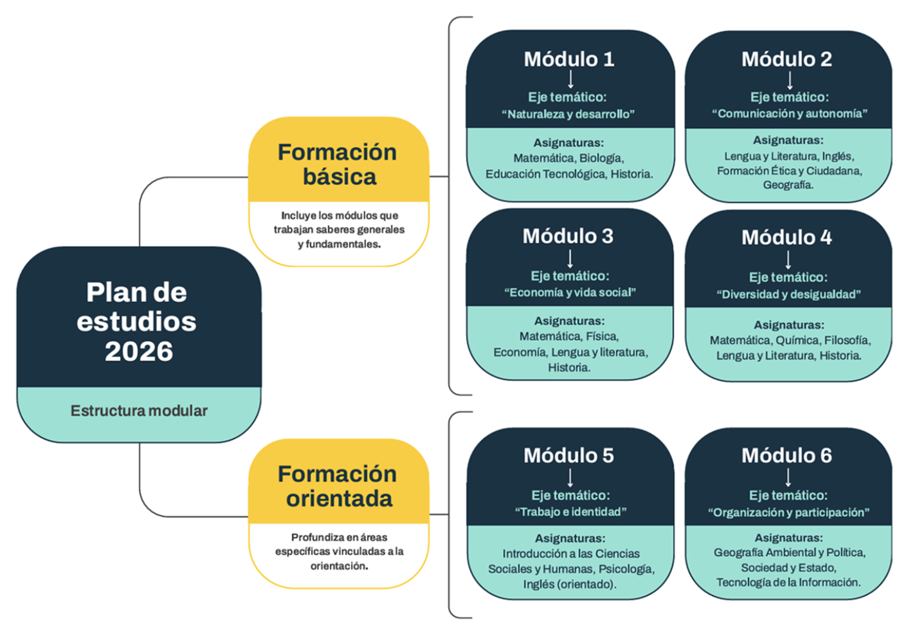

Adultos 2000
Dentro de la propuesta educativa de la Fundación El Futbolista, se ofrece a todos/as los/as futbolistas y familiares, la posibilidad de retomar y concluir los estudios secundarios mediante el programa Adultos 2000.
El Programa Adultos 2000 se caracteriza por ser un sistema de educación a distancia y acelerado, con alcance nacional, diseñado para que jóvenes y adultos (mayores de 16 años) obtengan el título de “Bachiller con Orientación en Ciencias Sociales y Humanidades” con reconocimiento oficial.
Este programa depende de la Dirección del Área del Adulto y del Adolescente del Ministerio de Educación de la Ciudad Autónoma de Buenos Aires.
La estructura curricular comprende 23 materias organizadas en 6 módulos con distintos ejes temáticos y deben articularse de acuerdo al cuadro de correlatividades requeridas.
Conozcamos cómo se organizan los módulos y las materias:

Cada materia consta de un aula virtual que comprende herramientas tales como: el programa de la materia, la bibliografía obligatoria, 4 trabajos prácticos, actividades, consultorías sincrónicas (no obligatorias) y el examen.
Las cursadas se realizan a través del Campus virtual:
Campus virtual →Para preparar las materias y poder rendir los exámenes, hay que transitar distintas etapas obligatorias tales como:
- Inscripción a materia: Se realiza mediante el SIU GUARANÍ. Los/as alumnos/as deberán seleccionar hasta 4 materias respetando las correlatividades.
- Entrega de 4 trabajos prácticos. Se realizan en el Campus virtual. Si el/la alumno/a tiene los 4 trabajos prácticos realizados y aprobados, la materia será tomada como aprobada y no deberá realizar examen.
- Inscripción a exámen: Se realiza a través del SIU GUARANÍ. Los/as alumnos/as que no hayan realizado y/o aprobado los 4 trabajos prácticos, deberán inscribirse al examen, seleccionarán la fecha y horario que quieren y pueden rendir las materias que estuvieron preparando.
- Período de examen: Se rinden a través del campus virtual en la fecha y horario seleccionado. La modalidad es multiple choice y se aprueban con 6.
- El/La alumno/a del programa podrá ir rindiendo exámenes de las materias adeudadas que figuran en el cuadro de equivalencias (situación académica). Estará habilitado a rendir cuatro materias por fecha, siempre que no sean correlativas.
- Las fechas de exámenes son en mayo, septiembre y diciembre.
- Es requisito indispensable tener 18 años cumplidos y poseer la documentación escolar completa y legalizada para poder egresar y obtener el título secundario.
Requisitos para inscripción:
- Cuenta personal de correo electrónico.
- Presentar DNI.
- Presentar documentación escolar*.
- Carta de adulto responsable en caso de que el alumno sea menor.
*Documentación escolar:
- Para iniciar el secundario:
Si nunca comenzaste con la escuela media (secundaria) debes presentar el certificado legalizado de Estudios primarios terminados. - Para retomar o continuar el secundario:
Si aprobaste algún año de la escuela media y el último colegio en el que cursaste es de CABA o PROVINCIA, debes acercarte al colegio y presentar una CONSTANCIA DE VACANTE (solicitala aquí y la recibirás en un plazo aproximado a 7 días por whatsapp)
Una vez que presentes la constancia de vacante en el colegio, deberás solicitar una “constancia de pase” -para colegios de CABA- o una “constancia de analítico en trámite” -para colegios de Provincia– con fecha actualizada, número de plan de estudios, especialidad y materias adeudadas. La misma será una documentación provisoria que te habilitará a realizar la inscripción y comenzar a estudiar.
¿Ya contás con toda la documentación?
SI, ME QUIERO INSCRIBIRLuego de inscripto, se deberá completar la documentación original legalizada.*
*La documentación legalizada de escuelas de CABA se gestiona de manera interna entre las instituciones, por lo que solo se debe esperar un plazo de 60 a 90 días para que se complete en Adultos 2000. En el caso de escuelas de la provincia de Buenos Aires o del interior del país, la legalización se deberá realizar de forma particular, retirando el analítico parcial de la escuela y luego realizar la legalización correspondiente. ¿Cómo legalizar la documentacion? Click aqui.
• Contacto de carácter administrativo con el Programa Adultos 2000: